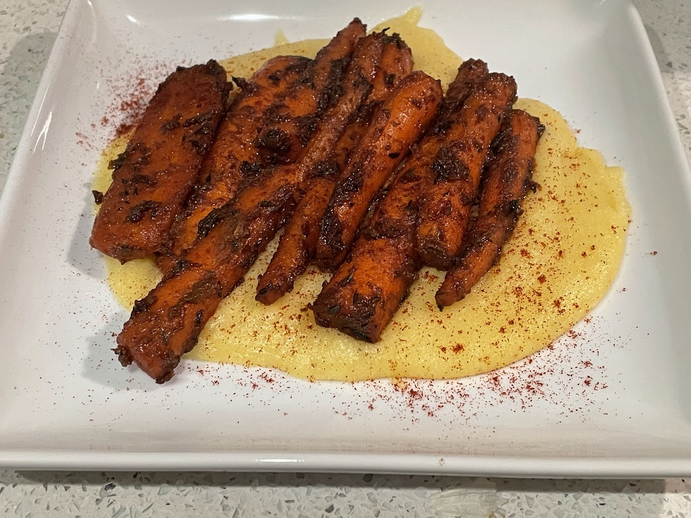

Carrots with polenta

Carrots braised in butter and miso paste and thyme, served on a bed of polenta, with smoked paprika sprinkled on top
Ingredients
- Polenta (water or milk, corn meal, and a bit of parmesan cheese)
- Carrots or parsnips
- A good amount of butter
- Miso paste
- Thyme
- Black pepper (optional)
- Smoked paprika (optional)
Instructions
Cook corn meal with plenty of water and for plenty of time while stirring frequently, so that it becomes soft and silky, then mix in a bit of parmesan cheese before it cools. If your polenta is grainy and lumpy, just add more water and cook it more (while stirring). Meanwhile, cut carrots in half lengthwise, and throw them in a pot with the butter, miso paste, and thyme. Also add black pepper and smoked paprika if you want. Cook on moderately high heat for a while, until they are soft. As the carrots cook, you make need to add water to deglaze the pot.
Notes
Lots of other vegetables are great served over polenta, such as (1) leeks cooked this exact same way, (2) mushroom bourguignon, or (3) roasted broccolini with garlic and lemon and black pepper.